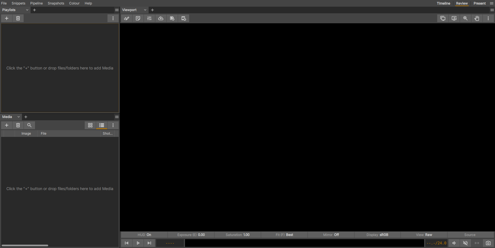
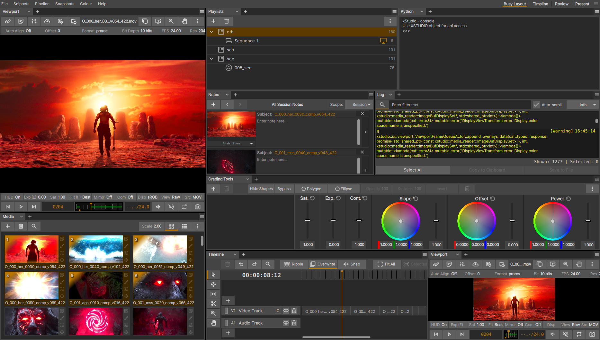
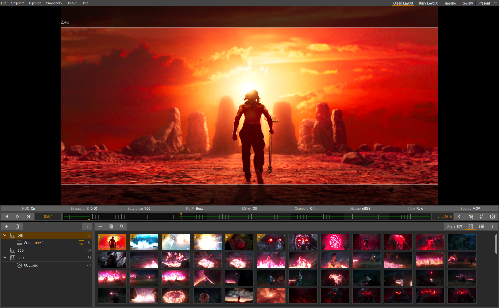
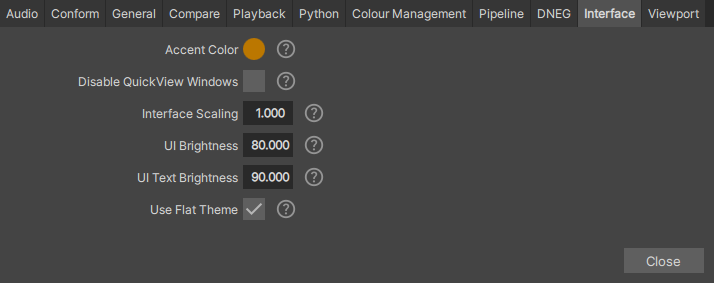
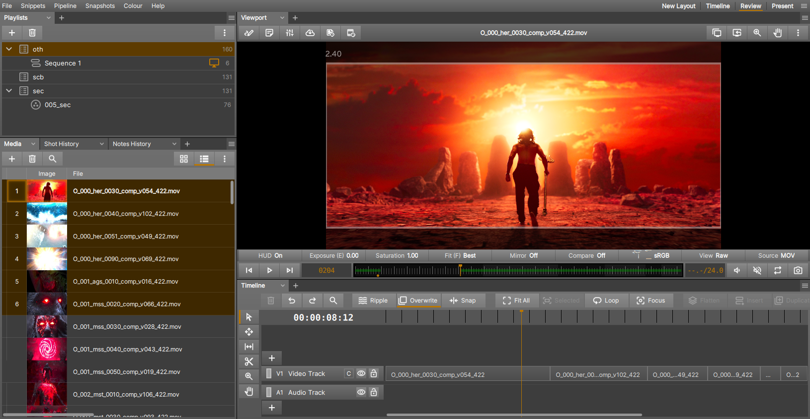
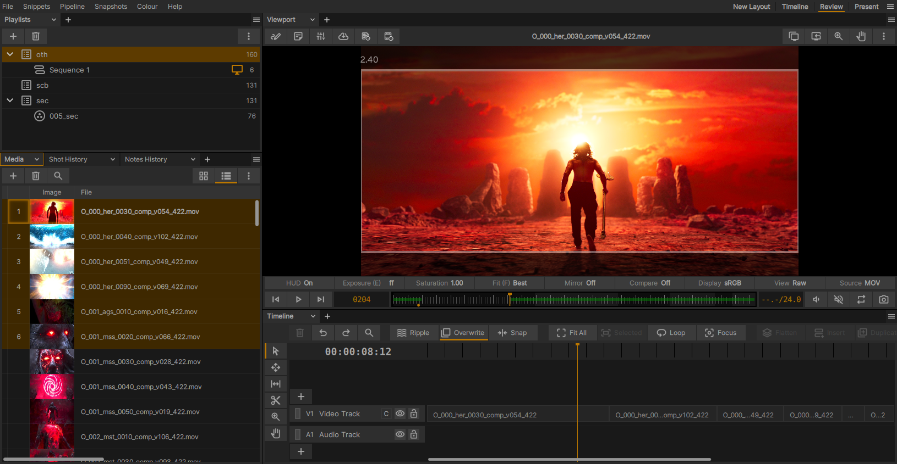

Custom Interface Layouts

xSTUDIOのメインウィンドウには3つの異なるデフォルトレイアウト (Timeline、Review、Present) が用意されており、ウィンドウ右上のシェルフから選択できます。また、F1・F2・F3 キーでこれらを順に切り替えることも可能です (レイアウトが3つ以上ある場合はそれ以降のファンクションキーも対応します)。
xSTUDIOインターフェースの最右上にあるハンバーガーメニューボタンから、既存のレイアウト (Presentレイアウトを除く) を自由に修正したり、新しいレイアウトを作成したりできます。このメニューでは、リスト内のレイアウト (Presentを除く) の名前変更、削除、または並べ替えのオプションも提供されています。
このシステムは、xSTUDIOのGUI構成を完全にコントロールできるようにすることを目的としており、好みの作業スタイルやメディアの整理、Review セッションの方法に合わせて、シンプルにも複雑にもカスタマイズできます。
レイアウト内の panels の伸縮と分割
「Present」レイアウトを除き、各レイアウトはxSTUDIOウィンドウを水平または垂直の panels に分割します。各 panels には、メディアリスト (Media List)、プレイリスト (Playlists)、ビューポート (Viewport)、Timeline など、xSTUDIOのインターフェースを1つ以上含めることができます。これらの panels は、panels を区切るガター (細い隙間) をクリックしてドラッグすることでサイズを変更できます。1つの panels に複数のインターフェースが含まれている場合はタブ化され、その panels 内でアクティブにするインターフェースをすばやく切り替えることができます。
panels はさらに細分化してインターフェース内に多くの panels を作成することができ、これは何度でも行うことができます。既存の panels を細分化するには、panels のタイトルバーの右上にあるハンバーガーメニューボタンを探してください。このメニューには、panels を水平または垂直に分割するオプションや、panels を破棄する (それによって残りの panels のスペースを広げる) オプションがあります。
指定した panels を表示するインターフェースを選択するには、panels エリアの左上にあるタブセレクターを探してください。タブタイトルの横にシェブロン (山形) ボタンがあり、これをクリックすると、panels に読み込み可能なインターフェースの選択肢を示すポップアップオプションが表示されます。複数のタブ付き panels 機能を使用するには、代わりに「+」ボタンをクリックして新しいタブ付きインターフェースを追加します。

多くの panels が追加された、必要以上に複雑なインターフェースです！Viewport が2つあることに注意してください。必要に応じて、異なる panels 内に同じインターフェースの複数のインスタンスを自由に配置できます。

Viewport、Playlist、Media List のインターフェースのみで構成された、よりミニマルなインターフェースです。さらに雑多な表示を減らすために、Viewport のUI要素の一部が非表示に切り替えられていることに注意してください。
Tip: 作成したレイアウトに満足したら、複数の Tab が含まれている panels を除き、「Tab」セレクターを非表示にすることをお勧めします。そうすることで、インターフェース内の雑多な表示が減り、画面スペースを少し広く使うことができます。これは、xSTUDIOウィンドウの最右上にあるハンバーガーメニューボタンから行うことができます。メニューの Tab Visibility セクションにある「Hide All (すべて非表示)」または「Hide Single Tabs (単一 Tab を非表示)」を選択してください。
Tip: 「Tab」キーを押すと、「Present」レイアウトと代替レイアウトを切り替えることができます。これは、デフォルトで Present の直前に使用されていたレイアウトになります。
Note
各 panels のハンバーガーメニューボタン (panels の分割や折りたたみに必要) にアクセスするには、メインのレイアウトメニュー (xSTUDIOウィンドウの最右上にあるハンバーガーメニューボタンからアクセス) の Tab Visibility セクションで「Show All (すべて表示)」オプションが選択されていることを確認する必要があります。
Note
レイアウトやUIのカスタマイズに関するすべての要素は自動的に保存されるため、今後のxSTUDIOセッション間でもそのまま維持されます。
Customising the Interface Walkthrough
この短い動画では、これらのカスタマイズの実際の動作をいくつか紹介しています：
Other Customisaions
File->Preferences->Preferences Manager から、ユーザー環境設定を設定するためのツールを起動できます。Interface Tab に移動すると、xSTUDIOインターフェースの外観を変更するためのいくつかのオプションが表示されます。

これらのユーザー環境設定設定を通じて、UI の明るさ、スケーリング、およびグラデーションの外観をコントロールできます。
インターフェース全体のトーンを、フォント/アイコンの明るさと背景レベルの両方で調整できます。flat テーマをオフにすると、ウィジェットが微妙なグラデーション効果を伴って描画され、よりモダンな外観になります。ただし、UI 内のグラデーションが Viewport 内の画像コンテンツの知覚的評価に潜在意識下で影響を与える可能性があると感じるユーザーもいるかもしれません。UI のスケーリングオプションは

輝度を高くし、flat テーマを無効にした UI です。

flat テーマを適用し、より暗い設定にした UI です。最適な設定は、お使いのモニターやディスプレイの特性、および作業スペースの周囲の照明 (環境光) によって異なる可能性が高くなります。